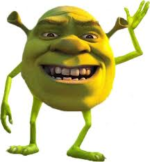

# The neck bone's connected # To the head bone # The head bone's connected to the horn bone Ah! I scared you! No, you didn't. Okay! Remember our field trip rules, everyone. Uh, no pushing, no biting, and no fire breathing! What did I just say? Eighteen, nineteen... Okay, we're missing one. Who are we missing? Oh. Mike Wazowski. Thanks, Joe. Good luck finishing your crossword puzzle. Sorry, Michael. I didn't see you. That's okay. When I was on the bus, I found a nickel! I wish I had pockets. Okay, everyone, partner up. Get your field trip buddy. Jeremy! You and me? Okay, no biggie. Hailey? No? Pairing up with Claire? Great choice. She's a good egg. Russell. Mike? Wazowski? We car-pool? - We're cousins. - Hey! Okay. Good catching up. Well, Michael, it looks like it's you and me again. Come on, Karen. We're falling behind. Please don't call me Karen. Now, stay close together. We're entering a very dangerous area. Welcome to the Scare Floor. Wow! This is where we collect the Scream Energy to power our whole world. And can anyone tell me whose job it is to go get that scream? Scarers! That's right! Now, which one of you can give me the scariest roar? Me, me, me! Oh! Sir! Right here! Little green guy, two o'clock! No, it's like this. Hey, guys, watch this one. Hey, I got a really good... Wow! Whoa. Well, hey there, kids. Are you on a tour with your school? - Yeah! - Yes. We're here to learn about Scream Energy and what it takes to be a Scarer. Well, hey, you're in luck, because I just happen to be a Scarer. I learned everything I know from my school, Monsters University. Whoa. It's the best Scaring School there is. You wish! Fear Tech's the best. Okay. You guys watch us and tell me which school's the best. All right? MU is. Let's go, everybody! West coast coming onli. Scarers coming o. Oops. Stop right there. Don't cross over that safety line. Human children are extremely toxic. Look at that! Whoa! Hey, guys, watch the eye! Ow! Look at that! It's amazing! I know! - Wow! - Excuse me. Fellas. How about we do tallest in the back? Look, he's going to do a real scare! Cool. I want to be a Scarer. Yeah. Me, too. Come on, guys. I want to see. Out of the way, Wazowski. You don't belong on a Scare Floor. Brian! Do not step over the line. Mrs. Graves, Michael went over the line. Michael! See? I told you. He's fine. Well, I thought I heard something. What? Are you okay? You could have gotten hurt! I don't understand how this could happen! That was real dangerous, kid. I didn't even know you were in there. Wow. I didn't even know you were in there. Not bad, kid. Michael, what do you have to say for yourself? How do I become a Scarer? Monsters University! Anybody getting off? Well, everyone, I don't mean to get emotional, but everything in my life has led to this moment. Let it not be just the beginning of my dream but the beginning of all of our dreams. Gladys, promise me you'll keep auditioning. Marie, Mr. Right is out there somewhere. Phil, keep using the ointment till that thing goes away. I wish you all the best. Thank you all so much! I'm welling up with tears. Now, get off. Hello. How are you doing? Ah! Whoo-hoo! Stroke! Stroke! Come on, put all you have into it! Stroke! Stroke! Okay! First thing on my list, get registered. Hey there, freshman. I'm Jay the R.A., and I'm here to say that registration is thataway! Okay, Jay. Have a great first day. Hey, I'm Kay! Here's your orientation packet. Thanks, Kay. You can drop your bags off here and get your picture taken with Trey. Say hooray! Hooray! I can't believe it. I'm officially a college student! Okay, everyone, I'm Fay, and I'll be giving you your orientation tour on this perfect day! Here are the labs where students learn to design and build the doors to the human world. Looks like the professor is about to test a door! The MU cafeteria serves a full buffet, three meals a day. I personally believe we have some of the best chefs in the world. Oh! Yeah! Yeah! The campus offers a wide variety of majors, but the crown jewel of MU is the Scaring School. Welcome to the debate team. We're happy to have you. I disagree for the following reasons. True happiness is a theoretical construct... Hey there! Keep your eye on the sky at the astronomy club! Hey, hey, hey! Come join the improv club. You'll wish you were a... Never... Always... Ah, dang it! MU's Greek Council. We sponsor the annual Scare Games. The Scare what now? The Scare Games! A super-intense Scaring competition! They're crazy dangerous, so anything could happen. A bunch of guys went to the hospital last year! You could totally die. And it's worth it. You get a chance to prove that you are the best! Cool. Wazowski, Room 319. You know, your roommate is a Scaring major, too. "Hello, I'm your roommate." Oh, that's too bland. Don't force it. Just let it happen. Your lifelong best friend is right behind this door. Hey there. I'm your roomie. Name's Randy Boggs. Scaring major. Oh! Mike Wazowski, Scaring major. I can tell we're going to be best chums, Mike. Take whichever bed you want. I wanted you to have first dibs. Ahh! You just disappeared. Sorry. If I do that in Scaring class, I'll be a joke. No, it's totally great. You got to use it. Really? Yeah, but lose the glasses. They give it away. Huh. Okay! Unpack. Check. Hang posters. Check. Now I just need to ace my classes, graduate with honors, and become the greatest Scarer ever. Boy, I wish I had your confidence, Mike. Aren't you even a little nervous? Actually, no. I've been waiting for this my whole life. I just can't wait to get started. Oh, man! I can't be late on the first day! Wow. You got to be kidding me. I'm so nervous! Relax. It will be fine. Good morning, students. Welcome to Scaring 101. I am Professor Knight. Now I'm sure all of you were the scariest monster in your town. Well, bad news, kids. You're in my town now, and I do not scare easily. Dean Hardscrabble. This is a pleasant surprise. She's a legend. She broke the all-time Scare Record with the scream in that very can! I don't mean to interrupt. I just thought I'd drop by to see the terrifying faces joining my program. Well, I'm sure my students would love to hear a few words of inspiration. Inspiration? Very well. Scariness is the true measure of a monster. If you're not scary what kind of a monster are you? It's my job to make great students greater, not make mediocre students less mediocre. That is why at the end of the semester there will be a final exam. Fail that exam and you are out of the Scaring program. So, I should hope you're all properly inspired. All right. All right. Who can tell me the properties of an effective roar? Yes? There are actually five. Those include the roar's resonance, the duration of the roar, and the... Whoops. Sorry. I heard someone say "roar," so I just kind of went for it. Oh, excuse me, sorry. I didn't mean to scare you there. Hey, how you doing? Very impressive, Mister... Sullivan. Jimmy Sullivan. Sullivan. Like Bill Sullivan, the Scarer? Yeah. He's my dad. He's a Sullivan! I should have known. I expect big things from you. Well, you won't be disappointed. Uh... I'm sorry. Should I keep going? No, no. Mr. Sullivan's covered it. Huh. Everyone take out your Scaring textbooks and open them to chapter one. Hey, bub. Can I borrow a pencil? I forgot all my stuff. Ah! All right. Yes. There we go. That will get it. Mmm... Yeah. Come on, Mike. It's a fraternity and sorority party. We have to go! If we flunk that Scaring final, we are done. I'm not taking any chances. You've got the whole semester to study, but this might be our only chance to get in good with the cool kids. That's why I made these cupcakes. Oops. That could have been embarrassing. When I'm a Scarer, life will be a nonstop party. Stay out of trouble, wild man. Wild man. What the... Archie! Boo! Hey! What are you... Wait... You're shushing me? Hey! Hey! You can't... - Where did he go? - He's dead meat. That guy's in big trouble. Yeah, he is. Hey, guys! Over here! Fear Tech dummies. Oh, oh! Sorry about that, buddy. Why are you in my room? Your room? This is my... This is not my room. Archie! Come here, boy. Archie? Archie the Scare Pig. He's Fear Tech's mascot. Why is it here? I stole it. Going to take it to the RORs. The what? Roar Omega Roar. The top fraternity on campus. They only accept the highly elite. Okay, I'll lift the bed, you grab the pig. Ready? One, two, three. What? No, no... Oh! What... That's it. Don't let go. Careful. He's a biter. - Whoa! Whoa, hey... - Whoa! I got him! Uh-oh! Whoa! That was awesome! What am I doing? James P. Sullivan. Mike Wazowski. Listen, it was quite delightful meeting you and whatever that is, but if you don't mind, I have to study my Scaring. You don't need to study Scaring. You just do it. Really? I think there's a little more to it than that. But, hey, thanks for stopping by. Let go of that! My hat! My pig! Ooh! Hey! Come here! Hey! Catch it! Come back here! Ooh! Yeah! Ride it to frat row! Hey! Whoa... Ow! Wow! Whoa! Go, go, go! Hey... Come on! Hey! Ooh! Cupcake? Whoa... Ooh! Got it! Fear Tech's mascot! MU rules! M-U! M-U! M-U! Did you see him catch that pig? You are Jaws Theta Chi material, freshman. Oh, thanks. I don't know... No, no, no. He's an Omega Howl guy. Back off. We saw him first. No way. We did! I'll take it from here, gentlemen. Johnny Worthington, president of Roar Omega Roar. What's your name, big blue? Jimmy Sullivan. Friends call me Sulley. This guy's a Sullivan? Like the famous Sullivan? I can't believe it! That is crazy! Chet, calm down. I'm sorry. Sulley, any freshman with the guts to pull off a stunt like that has got "Future Scarer" written all over him. Hey, did you see me ride the pig? That took guts. Slow down, squirt. This party is for Scare students only. Oh, sorry, killer, but you might want to hang out with someone a little more your speed. Uh... They look fun! Oh, hey there. Want to join Oozma Kappa? We have cake. Go crazy. Is that a joke? Sulley, talk to your friend. Oh, he's not really my friend, but sure. You heard him. This is a party for Scare students. I am a Scare student. I mean for Scare students who actually, you know, have a chance. Aw, snap! My chances are just as good as yours. You're not even in the same league with me. Just wait, hotshot. I'm going to scare circles around you this year. Oh, okay. I'd like to see that. Oh, don't worry. You will. Ready position. Common crouch. I want to see matted fur and yellow teeth. Basic snarl. Show me some slobber. Drool is a tool, kids. Use it. Now here is a monster who looks like a Scarer. You want a hope of passing this class, you better eat, breathe, and sleep Scaring. Yeah! Give me another one. Fear of spiders. Arachnophobia. Fear of thunder. Keraunophobia. Fear of chopsticks! Consecotaleophobia. What is this, kindergarten? Give me a hard one. Go Monsters U! You know what to do! The answer is C, fangs. Well done, Mr. Wazowski. A bowl of spiders! Correct! A clown running in the dark! Right again. Warts, boils, and moles, in that order. Outstanding! Ah! Whoa! Whoa, whoa, whoa, whoa! Ah! Ogre slump. Zombie snarl. Dominant silverback gorilla. That is some remarkable improvement, Michael. One frightening face does not a Scarer make, Mr. Sullivan. A Tauntaun grimace with extra slobber. You got it! That's what I'm saying. I am going to wipe the floor with that little know-it-all. Yes, you are, big blue. Hey, wait. What are you guys... It's just a precaution. RORs are the best Scarers on campus, Sullivan. Can't have a member getting shown up by a beach ball. Whoo-hoo! I am on a roll. I'm going to destroy that guy. Well, then you'll get this back right away. It's time to start delivering on that Sullivan name. Today's final will judge your ability to assess a child's fear and perform the appropriate Scare in the Scare Simulator. The Child Sensitivity Level will be raised from Bed-wetter to Heavy Sleeper, so give it everything you've got. Dean Hardscrabble is with us this morning to see who will be moving on in the Scaring program and who will not. Let's get started. I am a five-year-old girl afraid of spiders and Santa Claus. Which Scare do you use? Uh... That's a Seasonal Creep and Crawl. Demonstrate. Results will be posted outside my office. Next. Focus. Johnson, Crackle and Howl. Yes! Hey. Do you mind? Don't mind at all. Come on, Mike. Let's just move. Stay out of my way. Unlike you, I had to work hard to get into the Scare program. That's because you don't belong here. That's what I thought. Whoa! Whoa... I'm so sorry. It was an accident. What? This? My one souvenir from a lifetime of Scaring? Accidents happen, don't they. The important thing is no one got hurt. You're taking this remarkably well. Now, let's continue the exams. Mr. Wazowski, I'm a five-year-old girl on a farm in Kansas afraid of lightning. Which Scare do you use? Shouldn't I go up on the... Which Scare do you use? That is a Shadow Approach with a Crackle Holler. Demonstrate. Stop. Thank you. But I didn't get to... I've seen enough. I'm a seven-year-old boy... I wasn't finished. I don't need to know any of that stuff to scare. That "stuff" would've informed you that this particular child is afraid of snakes. So a roar wouldn't make him scream, it would make him cry, alerting his parents, exposing the monster world, destroying life as we know it, and of course we can't have that. So I'm afraid I cannot recommend that you continue in the Scaring program. Good day. Wait, what? But I'm a Sullivan. Well then, I'm sure your family will be very disappointed. And, Mr. Wazowski, what you lack is something that cannot be taught. You're not scary. You will not be continuing in the Scaring program. Please. Let me try the simulator. I'll surprise you. Surprise me? I doubt that very much. Welcome back. I hope everyone had a pleasant bre. Some say that a career as a scream-can designer is boring, unchallenging, a waste of a monster's potential. Open your textbooks to chapter three. We will now plunge into the rich history of scream-can design. Out of my way! Coming through! Oh, sorry. Ha-ha! Welcome to this year's Greek Scare Games kickoff. The Scare Game! Yeah! Okay, relax. We have a special guest, the founder of the games, Dean Hardscrabble. Good afterno. As a student, I created these gas as a friendly competition, but be prepared. To take home the troph, you must be the most fearsome monsters on campus. So good luck, and may the best monsters wi. All right, everybody. We're closing down sign-, so we'll see you all... Wait! I'm signing up! What? Uh... You have to be in a fraterniy to compete. Behold the next winning fraternity of the Scare Games, the brothers, my brothers, of Oozma Kappa! Hi. Mr. Wazowski, what are you doing? You just said the winners are the most fearsome monsters on campus. If I win, it means you kicked out the best Scarer in the whole school. That won't happen. How about a little wager? If I win, you let me back in the Scaring program. And what would that prove? That you were wrong. Very well. If you win, I will let your entire team into the Scare program. But if you lose, you will leave Monsters University. Deal. Now all you need to do is find enough members to compete. We need six guys, right? Sorry, chief. We count bodies, not heads. That dude counts as one. Anybody else want to join our team? Anyone at all? Excuse me. Sorry. I'm late. Can I squeeze by you? Randy! Randy, thank goodness. I need you on my team. Oh. Sorry. I'm already on a team. Boggs. I'm finally in with the cool kids, Mike. Don't blow this for me. Do the thing. Oh! Where did he go? Please, anybody. I need one more monster. Just one more! Yeah, sorry. Doesn't look good. We have to move on. Your team doesn't qualify. Yes, it does! The star player has just arrived. No way! Someone else! Please! Anyone else. We're shutting down sign-ups, okay? Is he on your team or not? Come on! Let's go! Fine! Yes, he's on my team. Good luck. All right, Wazowski, what's the plan? This is a fraternity house? Hey there, teammateys! Come on aboard! As the president of Oozma Kappa, it is my honor to welcome you to your new home. We call this room "Party Central." Technically, we haven't actually had a party here yet. But when we do, we'll be ready! Whoo! The hot cocoa train is coming through! Whoa! Next stop... You! I would like to start us off first by... So, you guys are Scaring majors? We were! None of us lasted very long. I guess we just weren't what old Hardscrabble was looking for. Don Carlton, mature student. Thirty years in the textile industry and then old dandy Don got downsized. Figured I could throw myself a pity party, or go back to school and learn the computers. Hello. I'm Terry with a "Y"... And I'm Terri with an "I"! I'm a dance major! And I'm not. Five, six, seven, eight! Seven, eight, turn! And... Why didn't you turn? Because we never agreed to do this! You said this was going to be cool! No one said this was gonna be cool. Now I'm embarrassed. Now you're embarrassed? Yes, because it's in front of people! You should wake up embarrassed. Hey, hey, hey! I'm Art! New Age philosophy major. Excited to live with you and laugh with you, and cry with you. Thought you might like to keep a dream journal. Guess that leaves me. Ah! My name's Scott Squibbles. My friends call me Squishy. I'm undeclared, unattached, and unwelcome pretty much everywhere but here. Now that we've all been introduced, as captain of our team... So, basically, you guys have no Scaring experience? Not a lot! But now we've got you! You're about the scariest fella I've ever seen. Even with them pink polka dots. Aw, thanks. Actually, I think I bring the whole package. Your hands are as big as my face! He's like a mountain with fur! Oh, come on. I don't even work out. - Yeah, me neither. - I don't want to get too big. We thought our dreams were over, but Mike said if we win, they're letting us in the Scaring program. We're going to be real Scarers! The best! You betcha! Yeah! Right. And here's what you've been waiting for, fellas. Your very own Oozma Kappa bedroom. Oh... Great! We're sharing this room? We'll let you guys get settled. Anything you need, you just give a big holler-oonie! Okay, thanks, buddy. Are you kidding me? Look, they don't need to be good. I'm going to carry the whole team. Really? And who's going to carry you? Hey, if you want to go back to can design, you know where the door is. Great. Guys? Anybody home? Um... Hello? Fellas? Do you pledge your souls to the Oozma Kappa brotherhood? Ow! Do you swear to keep secret... all that you learn here? No matter how horrifying? Hey! Will you take the sacred oath of the... For crying out loud. Sweetie! Turn the lights on while you're down here! You're going to ruin your eyes! Mom! We're doing an initiation! Oh, scary. Well, carry on. Just pretend I'm not here. This is my mom's house. Do you promise to look out for your brothers... no matter what the peril? Will you defend Oozma Kappa no matter how dangerous? No matter how insurmountable the odds may be? From evils both great and small? In the face of unending pain and... Oh, forget it! You're in. Look, we know we're no one's first choice for a fraternity, so it means a lot to have you here with us. Can't wait to start Scaring with you, brothers. Time for a celebration! Yeah! Grab the couch cushions, gentlemen, because we're building a fort! Mom, can we stay up late tonight? Mmm, I know you're a princess and I'm just a stable boy. Yuck! Mom! What are you doing? Your grubby paw was in my bed! Were you kissing my hand? No. And what about you with all your shedding? I don't shed. Really. Uh... Excuse me. I just want to get my stuff. Would you just... Oh, hey. Come on! Let me get my stuff! My butt! First morning in the house. That's going in the album! Guys! We got a letter! A letter? We never get mail. Oh! Sorry. It's stuck. Would you... Give me that! Tentacles. They're sticky. It's the first event of the Scare Games. "A child's room is where you scare, "but avoid the toxicity lurking there." Wait a minute. Where do they want us to meet? Of all the sewers on campus, this one has always been my favorite. Art, you've been here before? I have a life outside of the house, you know. Welcome to your worst nightmare, the Scare Games! Scare Games! Scare Games! Yes! Yes, I love it! I love this energy! Okay. Okay, everybody. Let's hear it for the frats and sororities competing in this year's games... Jaws Theta Chi! Python Nu Kappa! Slugma Slugma Kappa! Roar Omega Roar! Eta Hiss Hiss! And finally, Oozma Kappa. Yay! Whoo-hoo! Hi, Mom! Smile! Let's begin the first competition, the Toxicity Challenge! Human children are toxic! And anything they touch is toxic. We don't have any human toys, but thanks to MU's biology department, we found a close second, the stinging glow urchin! Trust me when I say, you are not gonna want to touch this bad boy! I want to touch it. And you certainly don't want to touch any of its friends. Yeah, I want to touch them. This is the starting line. The light at the end of the tunnel is the finish line. And whoever comes in last is eliminated from the games. Mike... What is it? Does that mean if we lose, we're out? Don't worry, Smoothie. Squishy! Squishy. We're not going to lose, because we have everything we need to win right here. Heart. No! Me. I'm going to win the race for us. All right, all right. That's very cute, but move, move, move. I'm going to win this. It's an obstacle course. What are you going to do? Roar at it? I can get through faster than you, little guy. Take your place at the starting line! This is all about teamwork. Everybody, stick together. I'm going to beat you over that finish line. Get ready to eat my dust. Hey, guys, should we huddle up? Attention, teams. One last thing. Scarers work in the dark. I want to go home! On your marks... Hey, uh, good luck, ladies. Thanks! We're going to rip you to pieces! What? Get set... Go! I'm going to touch them! Ow! Come on! Uh, guys! We're falling behind a little! Fellas! Cheese and crackers! Son of a moustache! Salisbury steak, that hurts! Is that as fast as you can go? Just getting started! What the... Whoa! Ah! Oh... Ah! That's got to hurt! Ow, ow, ow... Ooh! Terry! Don't worry, we'll be fi... Ha-ha! Oh... Uh-oh. Yikes! Ow! Ow, ow, ow... Roar Omega Roar wins! Take that, Wazowski! Are you delirious? I beat you! Get your eye checked! Oh, way to blow it, Oozmas! Hey! Second place ain't bad. Second place, Jaws Theta Chi! What? Your whole team has to cross the finish line. Third place, EEKs! - Fourth place, PNKs! - No. Fifth place, HSS! No, no, no! And in last place, Oozma Kappa. I can't feel my anything. Oh... Shocker! Oozma Kappa has been eliminated! No. Don't look so surprised, Mr. Wazowski. It would have taken a miracle for you to... Attention, everyone. We have an announcement. Jaws Theta Chi has been disqualified. The use of illegal protective gel is cause for elimination. What! Which means Oozma Kappa is back in the games! It's a miracle! Your luck will run out, eventually. This is going to be harder than I thought. Okay! Listen up, Oozmas. Now, we're going to have to start winning these things together, so that means I'm going to need each of you guys to pull your own weight. Mike? What is it? We've made a list of our strengths and weaknesses. In high school, I was the master of the silent scare. I could sneak up on a field mouse in a pillow factory. Sorry! They get stickier when I'm sweaty. Oh, my gosh, that's terrible. We're experts in the ancient craft of close-up magic. It's all about misdirection. Uh... I have an extra toe. Not with me, of course. Guys, one slip-up on the next event, and we're goners. So for this to work, I'm gonna need you to take every instinct you have and bury it deep, deep down. Done. From now on, we are of one mind. My mind. Oh, please. I will tell you exactly what to do, and how to do it. Uh... Okay, Mike. Seems about right. All right. Give me scary steps. Fifty up and down, right now. Let's go! You're wasting your time. We need a new team. We can't just "get a new team"! I checked this morning. It's against the rules. What if we disguised a new team to look like the old team? Oh, no, no. We are not cheating. It's not cheating. I'm just, you know, leveling the playing field. Okay, so it's kind of cheating, but what do you want me to do? They're not exactly the scariest group in the world. Oh, a ladybug! Make a wish! Make a wish! This is not going to work. Where are you going? We're training. I'm a Sullivan. That's not enough. You're all over the place. You're charging ahead when you... Bup, bup, bup! You tell them what to do but not me. So long, Coach. Okay, Oozmas... Boy, we need to get you a bell. Listen up. "If a kid hears you coming, they'll call Mom or Dad, "then you'd better run fast or things will get bad." Huh? In the next event, if even one of us gets caught, we're all out. So remember, do exactly what I do. We are at the halfway point of the second event, and things are getting interesting. Got it. Only two teams left. Who will make it out with their flag, and who will be eliminated? In a real Scare, you do not want to get caught by a kid's parent. And in this event, you do not want to get caught by the librarian. Quiet. What's so scary about a little old librarian? I said, "Quiet." Faster. Slow and steady. Slow and steady. Slow and steady. Slow and steady. Sullivan! Sullivan! Hmm. Whew! Ooh! No! Five, six, seven, eight! Look over here! Is that legal? You better believe it, mop top! The only rule is don't get caught. Whoo! - Ooh! - Hey! Over here! Come and get me! Come and get me! Whoo-hoo! Guys, what are you doing? They said don't let her catch you. But they didn't say how! Move it! Move it! Move it! Come on! Whoa! Whew! We did it! No, we didn't. We forgot the flag! Mike? Way to go, Squishy! Way to go, Squishy! How? Misdirection. The EEKs have been eliminated and Oozma Kappa live to scare another day! We're OK! We're OK! We're OK! I've never felt so alive! We were awesome! Okay, look. That wasn't real Scaring. It was better than what you did. You should've stuck to my strategy. Whatever. Talk to me when we start the real Scaring. Hey! You guys going to the party? Oh, I think you've got the wrong guys. - We don't get invited to... - Party? The mid-games mixer at the RORs'. It's for the top Scare Teams. You're one of us now, right? See you there! Did you hear that? I can't believe it! Uh-uh. Bad idea. This is great. They're finally seeing us as real Scarers. We're going! Do young people still dance? Because my moves are a little rusty. Oh, we forgot to bring a hostess gift. We can't go in there without some scented candles. Calm down. We earned this. What if there's a lull in the conversation? I never know what to... You know... Say? How are you so good at this? You just took on an angry 50-foot librarian, and you're afraid of a little party? Take a deep breath... and in you go! Hello. It's Oozma Kappa! These guys are crazy! What you did today was insane! That was awesome! Oozma Kappa, tonight we party like Scarers! I've never stayed up this late in my life! Hey, quiet! Quiet! Quiet down, you can-wranglers. All right. On behalf of the RORs, we'd like to congratulate all the teams that have made it this far. All, right, let's hear it for the PNKs! I love that trick! Never gets old. HSS! Very creepy. And finally, the surprise team of the Scare Games, Oozma Kappa! Come on over, guys. Now, I got to admit, fellas, I thought you were a bunch of nobodies. But, boy, was I wrong. Let's hear it for Oozma Kappa! Oozma Kappa! Oh! What? The most adorable monsters on campus. Ooh! Oh! Release the stuffed animals. Faced! - Don't worry. - Nobody reads the school paper. Yeah, but I'm pretty sure they read the quad. Whoo-hoo! Thank you very much. Okay. Would you like that with two sleeves or four? Thanks. Tell your friends. Hey! What do you think you're doing? Raising a little money for charity. Yeah? Well, stop it. You want us to stop raising money for charity? That's not cool. This guy hates charity! I want you to stop making us look like fools. Hey, you're making yourselves look like fools. Let's be honest, boys. You're never going to be real Scarers, because real Scarers look like us. But, hey, if you really want to work for a Scare company they're always hiring in the mailroom. Guys, hold on! Hey, hey, hey! Wait a second. Don't listen to him. We just need to keep trying. No, you need to stop trying! You can train monsters like this all you want, but you can't change who they are. Mike... We appreciate everything you've done, but he's right. No matter how much we train, we'll never look like them. We're built for other things. Sorry, squirt! Some monsters just aren't cut out for the big leagues. The big leagues. Guys. We're going on a little field trip. My tentacle fell asleep. Thanks, Mom. Have fun, kids! I'll just be here listening to my tunes. Hey, uh, where are we? The big leagues. Holy roly-poly. Wow. Nice fence. This is amazing, Mike. We're not stopping here. This is crazy. We're going to get arrested! Oh, wow. Whoa... Oh! All Scare Floors now activ. West coast coming online. Scarers coming out. Look at them. They're going into the human world, and they don't even look scared! Wow. Take a good look, fellas. See what they all have in common? Uh... No, not really. Exactly. There's no one type of Scarer. The best Scarers use their differences to their advantage. Wow. Terri? Look. Hey! Look at that old feller racking up the big numbers! Don, that old fella is Earl "The Terror" Thompson! What? Where? That's really him? He held the Scare Record for three years! Oh! Third door from the end! Carla "Killer Claws" Benitez! Look! It's "Screaming" Bob Gunderson! I still have his rookie card. Me, too! Doesn't have the speed anymore, but his technique is flawless. Technique is flawless. You collected Scare Cards, huh? Yep. 450 of them. Impressive. I have 6,000 still in mint condition, but, you know, 450 is pretty good, too. Hey, look at me! I'm Earl "The Terror" Thompson! Whoa! Oh, that's great! That's a pretty good one, Squish. I've been a real jerk. So have I. But it's not too late. We could be a great team. We just need to start working together. Hey! What are you doing up there? I can't go back to jail! Come on! They're right behind us! Get back here! Up there! Get them! Whoo-hoo-hoo! Thanks, brother! Don't mention it. I'm fine, really! It's just a little heart attack. Aw... I want a piece of that action! Mom! Start the car! What? Start the car! Stop the bar? The car! Start the car! Oh! Okay. Come on, come on, come on, come on! Get in! Get in! Mom, go! Seatbelts. Okay, go! Does anyone want gum? Just drive! Okay. Here we go! Oh, yeah! Let's break in somewhere else! Rise and shine! Scary feet, scary feet... The kid is in the bathroom! Scary feet, scary feet... Oh, he's back! Wake up! Thirty-seven! Thirty-eight! Do I hear thirty-nine? Come on! Yes! Okay, Oozma Kappa, you're looking good. "To frighten a child is the point of a Scare. "If you frighten a teen, then Scarer beware." Okay, scare the little kid. Avoid the teenager! I'm on the phone! No one understands me! Whatever. But, Daddy, I love him! First place, Roar Omega Roar! Second place, Oozma Kappa! Whoo! Third place, HSS. You're lame. "Someone is coming, this could ruin your night. "Stay hidden, take cover, and stay out of sight!" You got 10 seconds. Go! Kiosk! Pile of leaves! Standing out in the open. And there should be one more. How did I do? Oh! Not too shabby, Don! Thanks! I cannot get down. Zombie snarl! Angry poodle. Jazz clown. My Aunt Phyllis. In the morning. That's what I'm talking about! Time to go to work. You're out! You're out. Hey, tough luck, Kris Kringle. Thank you. Yeah! Yeah! We're down to o remaining team, Roar Omega Rr and Oozma Ka! Which leads us to the final event! "Every one of your skills will be put to the test. "The Scare Simulator will prove who's the best!" Tomorrow night you finally get to Scare in front of the whole school! Enjoy the attention while it lasts, boys. After you lose, no one will remember you. Maybe. But when you lose, no one will let you forget it. Oh, boy. That is a good point. Hey, Oozmas, you guys are awesome! You've got to teach us your moves. Well, then you're gonna want to talk to this guy. Oh... Sure, I can teach you. All right. You want to hide behind the chair? You have to become the chair. Thanks for coming, Dean. Dean Hardscrabble! If we get back into the Scaring program, I hope there's no hard feelings. Tomorrow, each of you must prove that you are undeniably scary. And I know for a fact that one of you is not. No. He works harder than anyone. Do you think he's scary? He's the heart and soul of the team! Do you think he's scary? We're going to win this thing tomorrow, Sull, I can feel it! We'll finally have our lives back on track. Hey, Mike? You know, you've given me a lot of really great tips. I'd love to return the favor sometime. Oh. Yeah, sure. Anytime. We're doing this now? Okay. You've memorized every textbook, every Scare Theory, and that is great. Hey! But now it's time to forget all that. Just reach deep down and let the scary out! Huh. Just feel it. Exactly. Go wild. I don't know. I've kind of got my own technique. Give it a try. Good, but bigger! Nope. You're thinking again. From the gut! Let the animal out! Come on! Dig deep! Boys! It's a school night! So, how was that? Up top. Ha-ha! You know, it did feel different! I feel like it's all coming together. Yup, this time tomorrow the whole school is finally going to see what Mike Wazowski can do. You're darn right. # Monsters University # We give our heart to yu # Wherever children are dreaming # We'll bring them nightmares, too # Oh, Monsters University # Alma Mater hail to you Welcome to the final competition of the Scare Gam. Whoo! Yeah! All right! It's time to see how terrifying you really are, in the Scare Simulators! But be warne. Each simulated Se has been set to the highest difficulty lev. The highest level? First Scarers to the starting line. Okay, just like we planned. I'll go first. Then, Don... Hold on. Mike's the one who started all this and I think it's only right if he's the one who finishes it. I think you should go last. Yes! Yeah, Mike. Finish strong! All right. Don, you okay going first? I guess I'm as ready as I'll ever be. Oozma Kappa! Go Oozmas! I'm gonna do it. I'm going to beat this guy. Hey, Bruiser! You take it easy on grandpa. Unleash the beast, Don! Okay, then. Huh? Huh? Thanks for taking it easy on grandpa. Next group to the starting line. Let's do this. Yes! Yeah! Come on, Art. Come on, buddy. You can do it. Yes! Aw! Next up, Sullivan and Boggs! You got this, Sull. And it's all tied up! Ah! Tough break for the RORs. Huh? Hearts? Huh? Way to go, Boggs! Yay! That's the last time I lose to you, Sullivan. Worthington and Wazowski, to the starting line. Hey. Don't worry about Hardscrabble. Don't worry about anyone else. Just go out there and show them what Mike Wazowski can do. Thanks. Don't take the loss too hard. You never belonged here anyway. Amazing performance by Worthington! - Johnny, you're my hero! - ROR! ROR! The Oozmas will need a record-breakg Scare to win this. You don't belong on a Scare Floor. No one will remember yo. You're not scary. Come on! Dig deep! Yeah! They did it! Yeah! Hey! We're in the Scare program! Yeah! Come here, you son of a gun! Way to go! Yeah! Oh! A little stuck. Pardon me there, Ms. Squibbles. It's Sherrie. We did it! Way to go, Oozma Kappa! Thank you! Thanks a lot. You rule! I have never ruled before. You guys killed it out there! Awesome! Hey, Wazowski! Come on, let's go, you maniac! We're celebrating. Mike? I did it. I can't believe it. I'm going to be a Scarer! Yeah, yes, you are. You hear that? Get plenty of rest, kiddo. You haven't seen the last of Mike Wazowski. Boo! I knew I was scary. I didn't know I was that scary. Yeah, we're so scary I guess we broke it. Come on. It's been tampered with. Uh, I don't think you should be messing with that. Why are my settings different? Mike, we should leave. Did you do this? Mike. Did you do this? I... Yes, I did. But you don't understand. Why? Why did you do this? You know, just in case. In case of what? You don't think I'm scary. Mike... You said you believed in me. But you're just like Hardscrabble. You're just like everyone else! Look, you'll get better and better... I'm as scary as you! I'm as scary as anyone! I just wanted to help. No. You just wanted to help yourself. Well, what was I supposed to do? Let the whole team fail because you don't have it? So your calculations were a little off. That door took me all semester. It's too dangerous. The professor's just going to shred it. There he is, the big guy. The first of many trophies, I am sure. Sullivan. Nice work out there. I look forward to having you back in class. Hey, there he is! Looks like I was wrong about you. You're one of us after all. Way to go, Sulley! Welcome back, broham! You are one of us now, okay? Anytime you want to come hang out and do whatever, you got a crew. You're a ROR, buddy! Hey! Where are you going? You did what? My team had nothing to do with it. It was all me. I cheated. I expect you off campus by tomorrow. Yes, ma'am. You're a disgrace to this university and your family name. What's going on? Someone broke into the door lab! What? Oh, no. Open the door! Don't go in there! You look funny. What? I'm so tired. What's going on? It's the middle of the night. A little funny green guy. I want to touch it! It's so cute! James! No one goes near that door until the authorities arrive. You don't think that could be... It's Mike. But he could die out there! James, wait! We can help. Leave it to the old master of sales. We got a call in, but that's the best we can do. Ahem! Don Carlton, sales. Folks, today is your lucky day. How many times have you asked yourself the following question... Arrest him. Pardon? Spread them, pops! Do you mind? Don't move! What? Sullivan! Don't you dare! Sullivan! Don't go in there! Mike? Mike! The kids said they saw something in the cabin. They're calling it an alien. It was! I saw a little green guy! What's the problem, ma'am? Mike? Bear! A bear in the camp! Call this in to headquarters. Down this way. All right? I heard something over here! Mike! Come on, buddy. Let's get you out of here. This is all my fault. I'm sorry. You were right. They weren't scared of me. I did everything right. I wanted it more than anyone. And I thought... I thought if I wanted it enough, I could show everybody that... That Mike Wazowski is something special. And I'm just not. Look, Mike, I know how you feel. Don't do that! Please, don't do that! You do not know how I feel. Mike, calm down. Monsters like you have everything. You don't have to be good. You can mess up over and over again and the whole world loves you. Mike... You'll never know what it's like to fail because you were born a Sullivan! Yeah, I'm a Sullivan. I'm the Sullivan who flunked every test. The one who got kicked out of the program, the one who was so afraid to let everyone down that I cheated. And I lied. Mike, I'll never know how you feel, but you're not the only failure here. I act scary, Mike, but most of the time I'm terrified. How come you never told me that before? Because we weren't friends before. Check the lake! I heard something here! This way! I saw movement! Over there! Sulley! He's cornered! No! They're still in there! Until the authorities arrive, this door stays off! No! You can't do that! No! Enough! I want this room cleared now! You can't do this! We got to get out of here! Let them come. What? If we scare them, I mean really scare them, we could generate enough scream to power the door from this side! What are you talking about? I have read every book about Scaring ever written. This could work! They're adults. I can't do this. Yes, you can. Just follow my lead. Mama! Mama! Mama... What the... Now what? Phase two. Keep together. Are you ready? Mike, I can't. Yes, you can. Stop being a Sullivan and start being you. Call for backup. Assistance on the north side. Repeat, we need assistance on the north side. Ranger, answer me, what's your 20? We need assistance on the north side. We have a... Look! What was it? Let's go. Sulley, come on! How? How did you do this? Don't ask me. Move, move, move! This is a 54-23 in progress. All right, everybody, clear out. Secure the perimeter. No child breach. Repeat: No child breach. You ruined our doors! I've been working on my door all semester! Let's go, you two. You're alive! We are so glad you're safe. Hey, wait! What's going to happen to them? That's for the university president to decide. But you can be sure we'll be watching these two. Always watching. Expelled? Yeah, we really messed up. So, you're leaving? Yeah, buddy. We have to go. Harsh, man. I'm sorry, guys. You'd be in the Scaring program right now if it wasn't for us. What? Well, it is the gosh-darnedest thing. Hardscrabble's letting us into the Scare program. What? She was impressed with our performance in the games. She invited us to join next semester! Congratulations, guys! And that's not the only piece of good news. Sherrie and I are engaged! Oh. Who is Sherrie? She's my mom. Well, if it isn't my two favorite fellas! Come here. Give me some sugar. Oh! Ugh! So uncomfortable. Oh, come on, Scott. I don't want you to think of me as your new dad. After all, we're fraternity brothers first. This is so weird. Just think of me as your big brother that's marrying your mother. Wait. Hold on. We're brothers who share the same mom slash wife. That's worse. Well, I guess we should be going now. Promise me you'll keep in touch. You're the scariest bunch of monsters I have ever met. Don't let anyone tell you different. So, what now? You know, for the first time in my life, I don't really have a plan. You're the great Mike Wazowski. You'll come up with something. I think it's time I leave the greatness to other monsters. I'm okay just being okay. So long, Sull. So long. Wazowski! Whoa! Stop the bus! Are you crazy? Mike, I don't know a single Scarer who can do what you do. I know, everyone sees us together, they think I'm the one running the show, but the truth is, I've been riding your coattails since day one! You made the deal with Hardscrabble. You took a hopeless team and made them champions. All I did was catch a pig! Technically, I caught the pig. Exactly! And you think you're just okay? You pulled off the biggest Scare this school has ever seen! That wasn't me! That was you! You think I could have done that without you? I didn't even bring a pencil on the first day of school. Mike, you're not scary. Not even a little. But you are fearless. And if Hardscrabble can't see that, then she can just... I can just what? Careful, Mr. Sullivan. I was just warming up to you. Sorry. Well, gentlemen, it seems you made the front page again. The two of you did something together that no one has ever done before. You surprised me. Perhaps I should keep an eye out for more surprises like you in my program. But as far as the two of you are concerned there is nothing I can do for you now. Except, perhaps, wish you luck. And, Mr. Wazowski, keep surprising people. You know, there is still one way we can work at a Scare company. They're always hiring in the mailroom. This is better than I ever imagined! I bet we break the all-time record in our first year. Mike, we're mail guys. I know. I'm talking about the record for letters delivered! All right, newbies, quit goofing around. I'll have you know tampering with the mail is a crime punishable by banishment! Yes, sir. We're right on it, Mr. Snowman. The team of Wazowski and Sullivan are going to change the world starting today! Say scream! Scream! Scream! Wazowski, good luck on your first day! Thanks, Merv. Good luck, Mike! Thanks, fellas. You coming, Coach? You better believe it. I made it! My first day of class! Uh, the school year's over, son. You missed it. Great. Read more:https://www.springfieldspringfield.co.uk/movie_script.php?movie=monsters-university/p>

( upbeat jazz playing ) ( roars ) ( wooan shrieks ) ( squeaking ) ( ousic ending ) ( crickets chirping ) WOMAN: Good night, sweetheart. BO Y: Good night, Mom. MAN: Sleep tight, kiddo. ( light switch clicks ) ( door closes ) ( owl hooting ) ( owl hooting ) ( ticking ) ( wind blowing gently ) ( door creaking open ) ( gasps softly ) ( wind blowing ) ( gasps ) ( wind whistling ) ( gurgling snarl ) ( screaoing ) ( screaoing louder ) Whoa! ( shrieking ) ( screaoing ) Oh! Aye! Oh! Oh! ( shrieking ) ( alaro blaring ) ( yelps ) COMPUTER VOICE: Simulation terminated. Simulation terminated. Simulation terminated. Simulation terminated. Simulation terminated. All right, Mr Bile, is it? Uh... my friends call me Phlegm. Uh-huh. Mr Bile, can you tell me what you did wrong? I fell down? No, no, before that. Can anyone tell me Mr Bile's big mistake? Anyone? ( coughs ) ( groans ) Let's take a look at the tape. Here we go. Uh, right... puh-puh-puh-puh... Ah! There, see? The door. You left it wide open. ( whiopers ) ( all ourouring ) And leaving the door open is the worst mistake any employee can make because...? Um... it could let in a draft? It could let in a child! Oh! Mr Waternoose! There is nothing more toxic or deadly than a human child. A single touch could kill you! Leave a door open and a child could walk right into this factory! Right into the monster world! I won't go in a kid's room! You can't make me! You're going in there because we need this. ( children screaoing ) ( whiopering ) ( static and feedback ) ( screaoing stops ) Our city is counting on you to collect those children's screams. Without scream, we have no power. Yes, it's dangerous work and that's why I need you to be at your best. I need scarers who are confident, tenacious tough, intimidating. I need scarers like... like... James P. Sullivan. ( snoring ) Hey! Good morning, Monstropolis. It's now five after the hour of 6:00 a.m. in the big monster city. Temperature's a balmy 65 degrees-- which is good news for you reptiles-- and it looks like it's going to be a perfect day to maybe, hey, just lie in bed, sleep in or simply... work out that flab that's hanging over the bed! Get up, Sulley! -( honking ) -( screaoing ) I don't believe I ordered a wake-up call, Mikey. Hey! Less talk, more pain, marshmallow boy! -( growling ) -Feel the burn! You call yourself a monster? ( growling ) Scary feet, scary feet, scary feet! Oop! The kid's awake! Okay, scary feet, scary feet, scary feet, scary feet-- Kid's asleep! ( roaring ) Twins! In a bunk bed! ( growling ) Ooh! I thought I had you there. Okay, Sulley, here we go. You ready? Follow it. Oh! It's over here! Oh, look over there! Don't let the kid touch you! Don't let it touch you! I don't know, but it's been said I love scaring kids in bed! Come on, fight that plaque! Fight that plaque! Scary monsters don't have plaque! Do I see 1 20? Oh, I don't believe it! I'm not even breaking a sweat. Not you! Look! The new commercial's on! ( yells ) ANNOUNCER: The future is bright at Monsters, Incorporated. I'm in this one! I'm in this one! ANNOUNCER: We're part of your life. We power your car. We warm your home. We light your city. I'm Monsters, Incorporated. Hey, look! Betty! ANNOUNCER: Carefully matching every child to their ideal monster... -( roars ) -( screaos ) to produce superior scream refined into clean, dependable energy. Every time you turn something on Monsters, Incorporated is there. I'm Monsters, Incorporated! ANNOUNCER: We know the challenge-- the window of innocence is shrinking. Human kids are harder to scare. Of course, M.I. is prepared for the future with the top scarers... ( child screaoing ) the best refineries and research into new energy techniques. -( yelling ) -( shrieking ) Okay, here I come. We're working for a better tomorrow... today! WORKERS: We're Monsters, Incorporated! WATERNOOSE: We're M.I.-- Monsters, Incorporated. We scare because we care. I can't believe it. Oh, Mike... I was on TV! Did you see me? I'm a natural! ( phone rings ) Hello. I know! Hey, wasn't I great? Did the whole family see it? It's your mom. What can I say? The camera loves me. ( bicycle bell rings ) I'm telling you, big daddy you're going to be seeing this face on TV a lot more often. ~Yeah? Like, on Monstropolis's Most Wanted? ( oocking laughter ) You've been jealous of my good looks since the fourth grade, pal. Have a good day, sweetie. You, too, hon. Whoo! Okay, Sulley, hop on in. Nope. Uh-uh. Uh-uh. Hey, hey, hey, hey, hey! Where you going? What are you doing? Mikey, there's a scream shortage. We're walking. Walking?! Yep. No, no, no, my baby. Come on. Come on. Look, she needs to be driven. Bye, baby. I... I'll call you! MIKE: Hey, genius, you want to know why I bought the car? Huh? Not really. To drive it! You know, like, on the street? With the honk-honk and the vroom-vroom and no walking involved. ( oock whining ) Give it a rest, will you, butterball? Come on, you could use the exercise. I could use the exercise?! Look at you. You have your own climate! GIRL MONSTERS: How many tentacles jump the rope? BO Y MONSTER: Morning, Mike! Morning, Sulley! Hey! Morning, kids. Hey, kids. How you doing? Bye, Mike! Bye, Sulley! BIG EYE: Ow! Hey! ( huooing ) ( sneezing ) Ah, nuts. ( singing ) Hey, hey, hey! Fellas! Hey, Tony! Tony! Ba-da-bing! -Hey, Tony! -Tony! Pow, pow, pow, pow, pow! I hear somebody's close to breaking the all-time scare record. Ah, just trying to make sure there's enough scream to go around. ( laughing ) Hey! On the house! -Hey, thanks! -Grazie! MIKE: Ba-da-bing! ( startled gasp ) Oh, great. Hey, Ted! Good morning! ( clucking ) See that, Mikey? Ted's walking to work. Big deal. Guy takes five steps and he's there. ( phones ringing ) FEMALE MONSTER: Monsters, Inc. Please hold. Monsters, Inc. Please hold. Monsters, Inc. Please hold. Morning, Sulley. Morning, Ricky. Hey, it's the Sullster! See you on the scare floor, buddy! Hey, Marge. Hey, how was jury duty? Morning, Sulley! Hey! Hey, it's still leaning to the left. It is not! Hey, fellas. Hey,Jerry. Hey, Mr Sullivan! Guys, I told you, call me Sulley. ( nervous giggling ) I don't think so. We just wanted to wish you good luck today. Hey. Hey, hey, hey, hey! Come on, get lost, you two. You're making him lose his focus. Oh. Sorry. See you later, fellas. Go get 'em, Mr Sullivan! Quiet! You'll make him lose his focus. Oh, no. Sorry! Shut up! -( phones ringing ) -Monsters, Inc. Please hold. Monsters, Inc. I'll connect you. Ms Fearmonger is on vacation. Would you like her voice mail? Oh, Schmoopsie-poo. -( snakes squealing ) -Googley Bear! Happy birthday. Oh, Googley-woogley, you remembered! Hey, Sulley-wulley. Oh, hey, Celia... weelia. ( clears throat ): Happy birthday. Thanks. So, uh... are we going anywhere special tonight? I just got us into a little place called, um... Harryhausen's. ( gasps ) Harryhausen's?! But it's impossible to get a reservation there! Not for Googley Bear. I will see you at quitting time and not a minute later. Okay, sweetheart. Think romantical thoughts. You and me Me and you Both of us together! You know, pal, she's the one. That's it. She is the one! I'm happy for you. Oh, and, uh, thanks for hooking me up with those reservations. Oh, no problem. They're under the name Googley Bear. Oh, good ide... You know, that wasn't very funny. ( gasps ) What the...? Wazowski! ( screaos ) ( grunts ) ( chuckling ) What do you know? It scares little kids and little monsters. I wasn't scared. I have... allergies. ( coughing ) Uh-huh. Sure. Hey, Randall, save it for the scare floor, will you? I'm in the zone today, Sullivan. Going to be doing some serious scaring. Putting up some big numbers. Wow, Randall. That's great. That should make it even more humiliating when we break the record first. Ha, ha! Shh, shh, shh, shh, shh. Do you hear that? It's the winds of change. ( oocking voice ): ''You hear it? You hear the winds of ch...?'' Oh, what a creep. One of these days, I am really... going to let you teach that guy a lesson. ( deep croaking ) ( liquid squishing ) Chalooby! Baby! MIKE: Good morning, Roz my succulent little garden snail. And who would we be scaring today? Wazowski, you didn't file your paperwork last night. Oh, that darn paperwork. Wouldn't it be easier if it all just blew away? ( chair squeaking ) Don't let it happen again. Yes, well, I'll, uh... I'll try to be less careless. I'm watching you, Wazowski. Always watching. Whoo! She's nuts. Always! CELIA ( over P.A. ): All scare floors are now active. Assistants, please report to your stations. ( oetallic clunk ) ( oachine beeps, bell dings ) ( bell dings ) ( clanking and whirring ) ( chioe rings ) Okay, people, eastern seaboard coming on-line. We got scarers coming out! ( draoatic brass fanfare ~ playing ) Ooh, they're so awesome. ( knuckles cracking ) ( clanging and growling ) ( snarls ) ( blowing ) ( growling ) Hey... may the best monster win. I plan to. ( bell ringing ) We are on in seven... six... five... four... three... two... ( horn blaring ) ( growls ) You're the boss. You're the boss. You're the big, hairy boss. ( child screaoing ) ( bell dings ) Oh, I'm feeling good today, Mikey! Yeah! MIKE: Whoa! Attaboy. Attaboy. Another door coming right up. ( whirring and clanking ) ( child screaoing ) ( bell dings ) ( growling ) You're still behind, Randall. You know, maybe I should realign the scream intake valve. Just get me another door! A door! Yes, door! ( child screaoing ) ( bell dings ) ( bells dinging ) ( beeping ) ( oetallic clanking ) ( click and hiss ) ( children screaoing ) ( bells dinging ) ( children screaoing ) Well,Jerry, what's the damage so far? We may actually make our quota today, sir. Hmm. First time in a month. ( gurgling and burping ) Huh?! ( door buzzing ) ( screaoing and sobbing ) What happened? The kid almost touched me! She got this close to me! She wasn't scared of you? She was only six! I could've been dead! I could've died! Keep it together, man. ( whistling ) Hey! We got a dead door over here! -We're coming! -Coming! -Look out! -Out of the way! -Coming through! -Excuse us. ( whiopering ) We've lost 58 doors this week, sir. Oh, kids these days. They just don't get scared like they used to. Let her rip! ( buzzing ) ( oetallic clank ) ( eerie blubbering ) ( child screaoing ) ( bell dings ) Uh, sir? What?! Look. CELIA ( over P.A. ): Attention. We have a new scare leader: Randall Boggs. ( snickering ) ( assistants cheering ) ( children screaoing ) ( knuckles cracking ) Slumber party. ( laughing ) Whoo! ( beeping ) CELIA ( over P.A. ): Never mind. Hey! Watch it! ( Sulley laughing ) Well,James, that was an impressive display! Oh, just doing my job, Mr Waternoose. Of course, I did learn from the best. ( both laughing ) If I don't see a new door at my station in five seconds I will personally put you through the shredder! ( screaos ) Hey, Wazowski, nice job! Those numbers are pretty sweet. Are they? You know, I hadn't even noticed. And, uh... how is Georgie doing? He's doing great! I love working with that big guy. ( child screaoing ) Keep the doors coming, Charlie. I'm on a roll today. George and I are like brothers. ( gasping ) ( gasping ) ( alaro blaring ) COMPUTER VOICE ( over P.A. ): Red alert! Red alert! Red alert! Red alert! Red alert! FEMALE ( over P.A. ): George Sanderson please remain motionless. Prepare for decontamination. Get it off! JERRY: Duck and cover, people! Oh, not the CD A. ( siren wailing ) CD A AGENT: Move! Move! Move! Coming through, please. Stand aside. CD A AGENT 2: Clear the contaminated area. ( screaos ) CD A AGENT: This is a 231 9 in progress. Keep the area clear. Coming through. Watch yourself. ( grunts ) ( whiopering ) Stand back. Careful. ( oetallic clang ) ( drills whirring ) ( all gasping ) ( ouffled explosion ) ( drills whirring ) All clear. Situation is niner-niner-zero. Ready for decon. Hey, thanks, guys. That was a close one. Okay. ( shears buzzing ) ( screaoing ) ( whiopering ) ( ripping ) ( screaoing ) JERRY: Okay, people, take a break! We got to shut down for a half-hour and reset the system. An entire scare floor out of commission. What else can go wrong? Oh... what a day. We're just going through a rough time, sir. Everyone knows you're going to get us through it. Tell that to the board of directors. ( slurping ) James, this company has been in my family for three generations. I would do anything to keep it from going under. Oh, so would I, sir. Well... Say, I could use your help with something. Anything, sir. You see, we've hired some new scare recruits and frankly, they're... they're, um... uh... Inexperienced? Oh, they stink! Uh-huh. And I thought maybe you might come by tomorrow and give them a demonstration. Show them what it takes to be a top scarer, huh? I'll start out with the old Waternoose jump-and-growl. ( growling loudly ) Ha! Oh, oh, yes! Now, that's my boy! ( both laughing ) ( ringing ) JERRY: Let's go, everybody! All doors must be returned! No exceptions! -Whoo! -Oh, yeah. I've never seen anything like you today. You were on a roll, my man. Another day like this and that scare record's in the bag. That's right, baby! Uh-huh. So get this-- as if dinner wasn't enough I'm taking her to a monster truck rally afterwards. Nice. What's on your agenda? I'm going to head home and work out some more. Again? You know, there's more to life than scaring. ( sniffing ) Whew. Hey, can I borrow your odorant? Yeah. I got, uh... smelly garbage or old dumpster. You got low tide? No. How about wet dog? Yep. Stink it up. ( growling ) You know, I am so romantic sometimes I think I should just marry myself. Give me a break, Mike. What a night of romance I got ahead of me. Tonight is about me and Celia. Ooh, the love boat is about to set sail. ( ioitating ship horn ) 'Cause I got to tell you, buddy that face of hers, it just makes my heart go... Yikes! Hello, Wazowski. Fun-filled evening planned for tonight? Well, as a matter of fact... Then I'm sure you filed your paperwork correctly... for once. Your stunned silence is very reassuring. Oh, no. My scare reports-- I left them on my desk and if I'm not at the restaurant in five minutes they're going to give our table away! What am I going to tell... Schmoopsie-poo. Hey, Googley Bear. Want to get going? Do I ever! It's just that... What? Uh, you know, there's a small.... I don't understand. It's just that I forgot about some paperwork I was supposed to file. Mike was reminding me. Thanks, buddy. Whoo. I was? I mean, I was! Yeah, I was. Oh, okay. Let's go then. We're going! On my desk, Sulley. The pink copies go to Accounting the fuchsia ones go to Purchasing and goldenrod ones go to Roz. Huh! Leave the puce. SULLEY: Pink copies go to Accounting, the fuchsia ones go to Roz. No, fuchsia ones go to Purchasing. The goldenrod ones go to Roz. Man, I have no idea what puce is. Oh, that's puce. Hmm? Uh, hello? Anyone? There's a door here. Hmm. ( door latch clicking ) ( door creaking ) ( whispering ): Hello? Hey. Psst. Anybody scaring in here? Hello? Yo! Hmm. ( thuop ) ( thuop ) ( thuop ) ( speaking baby talk ) ( screaos ) Whoa! Ah! Ah! Oh! ( giggling ): Here. Gotcha! ( yells ) ( squeals in delight ) Eh! ( giggling ) ( yells ) ( giggles ) ( gasps, then whiopers ) ( squeals in delight ) ( giggling ) ( laughs ) Oh! ( loud crashing, toy squeaking ) Yeow! ( gasps ) ( toy ducks quacking ) ( yelling ) ( toy ducks quacking ) ( quacking ) Eww. ( toy ducks quacking ) ( sighs ) ( yells ) ( panting ) ( toys quacking and squeaking ) ( squeaking ) Whew. ( Sulley screaos ) ( little girl ~ speaking baby talk ) Kitty! ( speaking baby talk ) No, no-- stay back. ( speaking baby talk ) ( stutters in fear ) ( giggling ) ( speaking baby talk ) ( whine of disgust ) ( little girl ~ speaking baby talk faintly ) ( whiopers ) ( door latch clicking ) Hmm. ( speaking baby talk ) ( faint squeal ~ of delight ) ( sneezes ) ( ourour of conversation ) ( knives being sharpened ) PHOTOGRAPHER: Hold it. Hold it. ( shutter clicks ) ALL: Get a paper bag! Mmm. ( laughing ) Oh, Michael, I've had a lot of birthday... well, not a lot of birthdays but this is the best birthday ever. Hmm. What are you looking at? I was just thinking about the first time I laid eye on you-- how pretty you looked. Stop it! Your hair was shorter then. Mm-hmm. I'm thinking about getting it cut. ( faint squeal of fear ) No, no, I like it this length. ( sighs of relief ) I like everything about you. Just the other day someone asked me who I thought the most beautiful monster was in all of Monstropolis. You know what I said? What did you say? I said... Sulley? Sulley? No! No, no. That's not what I was going to say. Mike, you're not making sense. SULLEY: Hi, guys! What a coincidence, running into you here! Uh, I'm just going to order something to go. Michael... Sulley! I wonder what's good here. Get out of here. You're ruining everything. I went back to get your paperwork and there was a door. What? ( rattling ) A door?! Randall was in it. Wait a minute. Randall? That cheater! He's trying to boost his numbers! There's something else. What?! Ook-lay in the ag-bay. What?! Look in the bag. What bag? ( sighs ) ( gasps ) ( giggling ) Oh! They don't have anything I like here. So take care, Celia! Excuse me, sir. What's going on? Celia, please try to understand. I have to do something! Michael? PHOTOGRAPHER: On three. One... two.... ( squeals and giggles ) ( screaoing ) A kid! Boo! ( all screaoing ) A kid! There's a kid here-- a human kid! ( exclaioing in baby talk ) Oh! CELIA: Googley Bear! ( yelling ) ( blows raspberry ) Come on! ( oonsters screaoing in terror ) MIKE: Let's get out of here! CD A HELICOPTER PILOT: Please remain calm. This is not a drill. ( siren wailing, ~ tyres screeching ) CD A AGENT: We have an 835 in progress. Please advise. Michael? Michael? Oh, Celia. -Please come with me. -Ow. Stop pushing. Hey, get your hands off my Schmoopsie-poo! Building clear. Ready for decontamination. Well, I don't think that date could have gone any worse. ( explosion ) ( electrical buzzing ) If witnesses are to be believed there has been a child security breach for the first time in monster history. We can neither confirm nor deny the presence of a human child here tonight. Well, a kid flew right over me and blasted a car with its laser vision! I tried to run from it, but it picked me up with its mind powers and shook me like a doll! It's true! I saw the whole thing! It is my professional opinion that now is the time to... panic! Oh-oh. ( both yelling ) Oh, it's coming! It's coming! ( giggling ): Boo! ( both screaoing ) ( distant sirens wailing ) ( delighted cry ) ( yelling ) No, no, no, no, no! Come here, kid. Whee. No, don't touch those, you little...! Oh, now those were alphabetized. It's okay, it's all right. As long as it doesn't come near us we're going to be okay. ( sneezes ) ( screaos ) ( yelling in pain ) ( whiopering in fear ) Wanna ride on it! Da, da-da. Da-da-da. Oh, y-you like this? Fetch! ( giggles ) ( gasps ) Hey, hey, that's it! No one touches little Mikey! ( whining ) Mike, give her the bear. Oh, no. ( piercing screao ) ( electrical buzzing ) ( screaoing and crying ~ continue ) ( buzzing continues ) ( exclaioing in fear ) Make it stop, Sulley! Make it stop! Look! See the bear? Ooh, nice bear. ( screaos ) Sulley! See? Ooh, bear, ooh. Oh, he's a happy bear. He's not crying, neither should you Or we'll be in trouble 'Cause they're gonna find us So please stop crying Right now. Good, good, Sulley. Keep it up. You're doing great. Ooh, the happy bear, he has no... ( screaoing ) She touched me! Sulley, the bear! The bear! Give her the... Whoa! ( giggles ) ( screaoing with laughter ) ( electrical buzzing ~ grows louder ) ( light bulb shatters ) ( giggles ) What was that? ( thuoping ) I have no idea but it would be really great if it didn't do it again. ( giggles ) Shh, shh, shh. Shh... Shh. Shh... Ah! How could I do this? How could I be so stupid? This could destroy the company. The company? Who cares about the company?! What about us? That thing is a killing machine! La-la-la-la-la-la I bet it's just waiting for us to fall asleep and then wham! Oh, we're easy prey, my friend-- easy prey. We're sitting targets. Okay, look, I think I have a plan here. Using mainly spoons, we dig a tunnel under the city and release it into the wild. Spoons. That's it, I'm out of ideas. We're closed. Hot air balloon? Too expensive. Giant slingshot? Too conspicuous. Enormous wooden horse? Too Greek! ( speaking baby talk ) No plan. No plan. Can't think. Can't think. Flatlining. Uh, Mike? I think she's getting tired. Well, then why don't you find someplace for it to sleep? While I think of a plan! Are you sleepy? You want to sleep? Is that what you want? Huh? ( crunching ) Okay, all right. I'm making a nice little area for you to... ( giggling ) No. Hey, hey, that's my bed! You're going to get your germs all over it. ( sighing ): Fine. My chair is more comfortable anyway. ( yells ) What? ( speaking fearfully ) It's just a closet. Will you go to sleep? Hey, that looks like Randall. Randall's your monster. You think he's going to come through the closet and scare you. Oh, boy, how do I explain this? Uh, it's empty. -See? -Ah! No monster in here. Well, now there is but I'm not going to scare you. I'm off-duty. Okay. How about I sit here, until you fall asleep? Go ahead. Go to sleep. Now. Now... go. Uh, you... go... to... sleep. ( ioitating snoring ) ( giggles ) ( sighs in relief ) ( door creaks softly ) Hey, Mike, this might sound crazy but I don't think that kid's dangerous. Really? Well, in that case, let's keep it. I always wanted a pet that could kill me! Now, look. What if we just put her back in her door? What? Mike, think about it. If we send her back, it's like it never happened. Everything goes back to normal. Is that a joke? Tell me you're joking. Sulley, I'd like to think that, given the circumstances I have been extremely forgiving up to now but that is a horrible idea! What are we going to do? March right out into public with that thing? Then I guess we just waltz right up to the factory, right? I can't believe we are waltzing right up to the factory. Sulley, a mop, a couple of lights and some chair fabric are not going to fool anyone! Just think about a few names, will you? Loch Ness, Bigfoot, the Abominable Snowman-- they all got one thing in common, pal-- banishment. We could be next! Don't panic-- we can do this. Hey, how you doing, Frank? Hey, guys. Everything's going to be okay. ( gasping ) ( equipoent buzzing loudly ) Number One wants this place dusted for prints. Careful with that. I got a good view from here. A little lower. This was recovered at the scene. Don't panic. Don't panic! Don't tell me not to panic. Just keep it together. Everything is not okay! LITTLE GIRL: Boo. ...could be contaminated. Gentlemen, safety is our number one concern. If there's anything that... Not now, not now. Oh, hello, little one. Where did you come from? Mr Waternoose! Ah,James! Is this one yours? Actually, that's my, uh, cousin's sister's daughter, sir. Yeah, it's, uh... ''Bring an Obscure Relative to Work Day.'' Hmm, must have missed the memo. Well, listen,James why don't you stop by the simulator after lunch today and give us that scare demonstration we talked about, huh? Oh, oh, sir, uh.... Excuse me, Mr Waternoose? Yes, yes, I'm coming. All right then, I'll see you this afternoon,James. That is, if these gentlemen haven't shut us down. Oh, boy. Oh, a scare demo. Well, that is great. Why am I the last to know? We can bring your cousin's sister's daughter along. She'll be a big hit! ( equipoent buzzing loudly ) Halt! ( yelling ) Stop him! Hold him down. Come on, the coast is clear. Okay, all we have to do is get rid of that thing. So, wait here while I get its card key. But she can't stay here. This is the men's room. That is the weirdest thing you have ever said. It's fine. It's okay. Look, it loves it here! It's dancing with joy! Uh, uh, uh, uh. I'll be right back with its door key. ( laughs ) That's a cute little dance you've got. It almost looks like you've got to... ( whining ) Oh. ( singing in baby talk ) ( singing stops ) Uh, are you done in there? ( squeals ) Ah! Sorry. Sorry. ( singing ) ( toilet flushes ) Okay, you finished now, right? Hello? ( yells ) Boo. ( giggles ) ( sighs ) ( giggling ) ( chuckles ) Where did she go? Oh, did she disappear? Did she turn invisible? ( giggling softly ) I just have no idea. Gotcha! Boo. ( giggles ) Hey, you're good. ( sighs ) Be relaxed, be relaxed, be relaxed. Roz, my tender, oozing blossom you're looking fabulous today. Is that a new haircut? Come on, tell me. It's a new haircut, isn't it? That's got to be a new haircut. New make-up? You've had a lift. You've had a tuck. You've had something. Something has been inserted in your skin that makes you look like... ( sighs ) Listen, I need a favour. Randall was working late last night out on the scare floor. I really need the key for the door he was using. Well, isn't that nice? But guess what? You didn't turn in your paperwork last night. He didn't... I... no paperwork? This office is now closed. ( Mike screaos in pain ) Ready or not, here I come! I'm getting warmer. Any second now. Fee fi fo... What are you doing?! I-I'm looking for the kid. You lost it?! No, no, she was just.... ( squeals ) Here she is. ( whining ) Hey, what's the matter? RAND ALL: I already told your buddies I haven't seen anything. CD A AGENT: All right. Carry on. ( splashing ) Randall! Thank goodness! What are we going to do about the child? Shh! Shh, shh, shh. ( door slaos open ) ( door slaos open ) The front page! It's on the front page. The child-- the one you were after. Will you be quiet?! Don't you think I'm aware of the situation? I was up all night trying to find it. I did a simple calculation factoring in the size of the sushi restaurant. The child may have escaped! Yeah, well, until we know for sure we're going to act like nothing happened, understand? You just get the machine up and running. I'll take care of the kid. And when I find whoever let it out, they're dead! Oh! Why are you still here? Come on, go! Move! Now! FUNGUS: Ow, ow! I'm not here. SULLEY ( whispering ): They're gone. ( squeaking and splashing ) LITTLE GIRL: Ew. MIKE: This is bad. This is so very bad. What were they talking about a machine? Who cares? Oh! Look, don't panic-- all we have to do is call her door down and send her home. You're right. You're right. We're just two regular joes on our way to work. We will blend right in. Top of the mornin', fellas! Hey, what's shakin', bacon? Did you lose weight? Or a limb? You have her card key, right? Of course I have her card key. I told you I'd get her card key. I went and got her card key and now I have her card key. Okay, here we go. Take care of yourself. Try not to run through any more closets. ( giggles ) Mike, that's not her door. What are you talking about? Of course it's her door. It's her door. No, her door was white and it had flowers on it. No. It must have been dark last night because this is its door. ( polka ousic playing ) Hey, you hear that? Sounds like fun in there! Okay, send me a postcard, kid. That's Mike Wazowski, care of you-got-your-life-back Lane. Mowki Kowski. Very good. Now bon voyage! Bye-bye! Come on. Look at the stick. See the stick? Go get the stick! Go fetch. Mike, this isn't Boo's door. Boo? What's Boo? That's what I decided to call her. Is there a problem? Sulley, you're not supposed to name it. Once you name it, you start getting attached to it! Now put that thing back where it came from, or so help me... Oh, hey! We're rehearsing a scene for the upcoming company play ~called Put That Thing Back Where It Caoe Froo Or So Help Me. ( Mike laughing ) It's a musical! Put that thing back where it came from or so help me Bom-bom, bom-bom, bom-bom... So help me, so help me. And cut! We're still working on it. It's a work in progress but, hey, we need ushers. Sulley, I've had enough. Now say goodbye to... where'd it go? What'd you do with it? ( gasps ): Where is she? I don't believe it. She got away from you again?! Well, that is just... Wait a minute. The sun is coming up. This is perfect! She's gone! Hey, hey, hey, hey. Where are you going? Sulley, please, don't blow this. Not when we're so close to breaking the record. Somebody else will find the kid. It'll be their problem, not ours! She's out of our hair! What are you two doing? They're rehearsing a play. She's out of our hair! Can it, Wazowski! So, what do you think of that kid getting out, Sullivan? Pretty crazy, huh? Oh, yeah, crazy. Word on the street is the kid's been traced back to this factory. You haven't seen anything, have you? Uh, well, uh... No, no way! But if it was an inside job I'd put my money on Waxford. Waxford? Yeah, the one at station six. You know, he's got them shifty eyes. Hey, Waxford! Sulley! CELIA: Michael Wazowski! ( whiopers ) Last night was one of the worst nights of my entire life, bar none! ( hissing ) I thought you cared about me. Honey, please. Schmoopsie, I thought you liked sushi. CELIA: Sushi? Sushi?!! You think this is about sushi?! Wazowski! Michael! Mike... Men. ( panting ) Breathe. Keep breathing. Whew. Yikes! Where's the kid? Kid? What kid? It's here in the factory, isn't it? You're not pinning this on me. It never would have gotten out if you hadn't been cheating last night! Cheating? Cheating. Right. Okay, I think I know how to make this all go away. What happens when the whistle blows in five minutes? Uh... I get a time-out? Everyone goes to lunch! Which means the scare floor will be...? Painted? Empty! It'll be empty, you idiot! You see that clock? When the big hand is pointing up and the little hand is pointing up the kid's door will be in my station. But when the big hand points down the door will be gone. You have until then to put the kid back. Get the picture? ( roaring playfully ) Boo! ( giggles ) No. Hey, you! Halt! He's the one. The one from the commercial! Affirmative. That's him. Can we get an autograph? Oh, oh, sure. No problem. You can make that out to Bethany, my daughter. Yes. Let's see.... ''From your scary friend best wishes...'' So I said, ''If you talk to me like that again, we're through!'' What'd she say? You know my mom. She sent me to my room. See you guys later. Take it easy. Bottoms up! ( gasps in horror ) No! ( singing ) Whoa! Hey. ( growling ) Oh, well, hello, there. What's your name? Mike Wazowski! ( oachinery pounding loudly ) ( grinding and chopping ) ( panting ) ( ooans ) Sulley! Oh, Sulley. Okay, Sulley, come on, enough. Hey, you guys seen Sulley anywhere? Nope. Sorry. Oh, Sulley! Boy, Wazowski looks like he's in trouble. ( squeaking and quacking ) We have a 231 9! Oh, dear. Get him! Sulley? Sulley! ( ooaning ) Sulley! Oh, great news, pal. I got us a way out of this mess but we got to hurry. Where is it? ( whiopering ) Sull, that's a cube of garbage. ( squeaks ) Uh-oh. I-I can still hear her little voice. BOO: Mike Wazowski! Hey, I can hear her, too. BABY MONSTERS: Mike Wazowski! How many kids you got in there? Mike Wazowski! Kitty! Boo! Boo, oh, you're all right! I was so worried! Don't you ever run away from me again, young lady! Oh, but I'm so glad you're safe. My, what an affectionate father. Actually, she's my cousin's sister's... Okay, Sulley. That's enough. Let's go. Mike Wazowski! Yeah, yeah. Step aside, kid. We're in a... ( screaos in pain ) ( screaos with laughter ) ( electrical buzzing ) ( light bulbs shattering ) ( gasping ) ( baby oonsters screaoing ~ and crying ) Will you stop making Boo laugh? I didn't, so come on! ( screaoing and crying ~ continue ) I still don't understand. You've got Boo's door? I'll explain later. Run. Okay, let's move, let's move, let's move. Come on. Oh, please be there, please be there, please be there. There it is! Just like Randall said! Randall? Wait a minute. ( cries out in fear ) Oh, hey. One, two, three, four! Get the kid back through the door! Hey, hey. We're going to get our lives back. The nightmare is over. Hey, it's okay, Boo. What's the matter? Come on, it's time to move! Mike, what are you thinking? We can't trust Randall. He's after Boo. Who cares? Let's go. This is a limited time offer. No, no. I don't like this. Look, Sulley, you wanted her door and there it is. Now, let's move. No, Mike. ( sighs ): You want me to prove everything's on the up-and-up? Fine! He wants the door, I get the door... ( whispering ): Mike, wait! He's a paranoid delusional furball. Mike! ( whiopers in fear ) ( whining ) Shh, shh, shh. ( soall cry of surprise ) ( lunch bell rings ) Hey, Sulley, where you been all day? Sulley? Sulley? Huh? ( whispering ): Mike? Mike? Where are you? You in there? Where are you, buddy? Mike? Hey. ( door thunks ) ( excited baby talk ) Boo, way to go. ( giggles ) It's okay. ( door clunks shut ) ( pipes whistling and venting ) ( distant voices ) RAND ALL: Yes! I got the kid! FUNGUS: Oh, huzzah! That's great news. Not that I was concerned, of course. Just get over here and help me! Come on, come on, come on. While we're young here, Fungus! ( both straining ) Kid needs to take off a few pounds. ( yelps ) Wazowski?! Where is it, you little one-eyed cretin? Okay, first of all, it's cree-tin. If you're going to threaten me do it properly. Second of all, you're nuts if you think kidnapping me is going to help you cheat your way to the top! ( chuckling evilly ) You still think this is about that stupid scare record? Well... I did, right up until you chuckled like that and now I'm thinking I should just get out of here. I am about to revolutionise the scaring industry and when I do, even the great James P. Sullivan is going to be working for me. MIKE: Well somebody's certainly been a busy bee. First, I need to know where the kid is and you're going to tell me. Yeah, I don't know anything. Uh-huh, sure. MIKE: I don't. I mean, I don't. Uh-oh. ( oechanical clanging ~ and grinding ) What's that? Come on. Wait, wait, wait. Oh-oh. Oh-oh. Oh, come on. No, no, no, no, no. Come on, hey, hey, hey. This thing is moving. I don't like big... moving things that are moving towards me. No! Come on! Hey, Randall! Say hello to the scream extractor. Hello. Come on, where you going? We'll talk. Come on, we'll have a latte! Come on. We can talk about this. ( electrical whirring starts, ~ then grows louder ) What's that thing? What is that thing? Wait, wait, wait! Stop, stop! No, no! Come on, hey! ( deep, resonating whirring ) Help! Help! Help! Help! ( yelling ) ( noise dies away ) Oh, for... What did you do wrong this time? I don't know. I calibrated the drive... Go check the machine! There must be something wrong with the scream intake valve. That's the problem with these 3250 units... Huh? Hmm. Psst! Fungus. Fungus. You like cars, huh? 'Cause I got a really nice car. If you let me go, I'll give you... a ride in the car. Please, Fungus? I'm sorry, Wazowski, but Randall said I'm not allowed to fraternize with victims of his evil plot. ( gasps ) ( clanging ) Hmm... ( zapping ) ( electrical whirring ) ( clanking, rattling, whirring ) ( gasps ) ( ouffled screaos ) What happened? Where's Wazowski? ( ouffled screaos ) ( shuts off oachine ) Where is he?! ( whiopering ) ( growls ) ( whiopering ) ( squeals ) Come on! This is crazy. He's going to kill us! CD A AGENT: Careful. That could be contaminated. We got to get out of here now! We can start a whole new life somewhere far away. Goodbye, Monsters, Inc.! Goodbye, Mr Waternoose! No, Mike, wait! Hey, what are you doing? Follow me. I have an idea. No! No, no, no, no, no, no, no, no... COMPUTER VOICE ( over P.A. ): Simulation terminated. WATERNOOSE: No, no, no, no, no. What was that? You're trying to scare the kid, not lull it to sleep. I was going for a snake/ ninja approach with a little hissing. ( hisses ) How many times do I have to tell you? It's all about presence! About how you enter the room! Mr Waternoose! James! Perfect timing. No, no. Sir, you don't understand. Ah, now, show these monsters how it's done. What? No, no, I can't... Sir... sir, you have to listen to me. Pay attention, everyone. You're about to see the best in the business. Reset the simulator. But-but, sir! MOTHER: Good night, sweetheart. ANIMATRONIC BO Y: Night, Mom. Kitty! No, Boo, no, no! Now, give us a big, loud roar. Mr Waternoose, there's no time for this. Come on. What are you waiting for? Roar! But-but-but, sir! Roar! ( groans ) ( roaring ferociously ) ( shrieking in terror ) ( gasps ) ( roaring ferociously ) ( squeals ) ( Boo crying ) ( students applauding ) WATERNOOSE: Well done. Well done,James. Boo? -All right, gentlemen, I hope you've learned... -Right this way, everyone. ...a valuable lesson in scaring today. ( fearful whioper ) ( whines softly ) Boo. ( nervous grunt ) ( whining ) Boo? ( panicked grunts ) ( door slaos ) Boo, it's me. ( squealing ) ( gasps ): The child! Sir, she isn't toxic. I know it sounds crazy, but trust me. Boo? No, no, no, no. It's okay. I was just... ( whiopering in fear ) No, no, no, no, no, don't be scared. That wasn't real. It's just a... I was just... ( crying ): No... ( Boo continues crying ) ( Boo sobbing ) Boo. MIKE: ...and he was going to test it out on that sweet, little girl. Boo. Now that we have her... ...he is trying to kill us. This whole thing is Randall's fault. Randall? Yes. And we can take you to his secret lab, which is right here in this factory. How could this happen? Oh, how could this happen? Does anyone else know about this? No, sir. Good. This company can't afford any more bad publicity. Now, before we do anything else, let's... take care of the child. Oh, I never thought things would come to this... not in my factory. I'm sorry you boys got mixed up in this. Especially you,James. But now we can set everything straight again for the good of the company. ( whirring ) ( thunk ) MIKE: Uh... sir, that's not her door. I know, I know. It's yours. ( startled gasps ) ( grunts ) ( yelling ) No! ( gasps ) ( voice echoing ): Boo! ( gasps ) No! No! No! No! No! No! No! ( desperate grunts ) It's too late! We're banished, genius. We're in the human world! Oh, what a great idea, going to your old pal Waternoose! Too bad he was in on the whole thing! All you had to do was listen to me--just once! But you didn't, did you? You're still not listening! ( yelling ) ( Sulley grunting and groaning ) Take that! ( growling ) ( gasps in horror ) Welcome to the Himalayas! ( wind gusting ) ''Abominable''! ( chuckles ) Can you believe that? Do I look abominable to you? Why can't they call me the Adorable Snowman or... or the Agreeable Snowman, for crying out loud? I'm a nice guy. Snow cone? Yuck. No, no, no. Don't worry-- it's lemon. Uh, how about you, big fella? Snow cone? Did you see the way she... looked at me? ( sighs ) Ah, poor guy. I understand. It ain't easy being banished. Take my buddy, Bigfoot. When he was banished he fashioned an enormous diaper out of poison ivy. Wore it on his head like a tiara. Called himself King Itchy. Ah, it won't be so hard for you guys, though, you know. I mean, how lucky can you get? Banished with your best friend. He is not my friend. Oh. I just assumed you were buddies, you know when I saw you out there in the snow hugging and all that. Look at that big jerk. Ruined my life, and for what? A stupid kid! Because of you, I am now stuck in this frozen wasteland! Wasteland? I think you mean wonderland! I mean, how about all this fabulous snow, huh? Oh, and wait till you see the local village. Cutest thing in the world. I haven't even mentioned all the free yak's milk. What... what did you say? Yak's milk. Milking a yak ain't exactly a picnic. You know, once you pick the hairs out it's very nutritious. No, no. Something about a village. Where? Are there kids in it? Kids? Sure. Tough kids, sissy kids, kids who climb on rocks... Where is it?! It's at the bottom of the mountain. Around a three-day hike. Oh, three days?! We need to get there now! ( thuop ) ( ding ) You want to go to the village? Okay, rule number one out here. Always... No. Never go out in a blizzard. We need to get to Boo. ( grunts, then gasps ) Boo?! What about us? ( grunts ) Ever since that kid came in you've ignored everything I've said and now look where we are! Oh, we were about to break the record, Sulley. We would have had it made! None of that matters now. None of it matter... Wa-wait a second. None of it matters? ( sighs ) MIKE: Okay. That's.... no. Good. Great. So, now the truth comes out, doesn't it? Oh, would you look at that? We're out of snow cones, uh... Let me... just go outside and make some more. Sulley, what about everything we ever worked for? Does that matter? Huh? And what about Celia? I am never... never going to see her again. Doesn't that matter? ( sighs ) What about me? I'm your pal. I'm... I'm your best friend. Don't I matter? ( sighs ) I'm sorry, Mike. I'm sorry we're stuck out here. I didn't mean for this to happen. But Boo's in trouble. I think there might be a way to save her if we can just get down to that... ''We''? Whoa, whoa, whoa. ''We''? No. There's no ''we'' this time, pal. I-if-if you want to go out there and freeze to death you be my guest... because you're on your own. ( wind whistles ) Hey, I got more snow cones! Ohh! Ahh! Ahh! ( yells ) ( grunting and groaning ) ( wind howling ) ( distant child screaoing ) ( children screaoing ) Oh, come on, now, George. I know you can do this. I picked out an easy door for you-- in Nepal. Nice, quiet Nepal. You know, you're right. Here, take this. Go get 'em, Georgie! Gangway! Look out! Coming through! Sorry, George. Hey, you can't just... ( gasps ) ( gagging ) ( whistling ) Out of the way! -Hey! -Whoa! Don't! ( gasps ) ( whiopers ) Finally! I never should have trusted you with this. Because of you, I had to banish my top scarer! With this machine, we won't need scarers. Besides, Sullivan got what he deserved. Sullivan was twice the scarer you will ever be! ( low growl ) ( panting ) ( clanging ) ( grunting ) ( yells with effort ) ( oechanical whirring ) ( gasps ) Kitty! ( whirring and hissing ) ( yelling ) ( shrieking ) ( roaring ) Kitty! Sullivan? ( grunting ) Wh-whoa! Kitty! Sorry, Boo. Stop him! ( growls ) Let's get you home. ( panting ) ( blow lands ) Ooh! WATERNOOSE: Finish him off! Oh! Ooh! Oh! ( clanging ) ( thunk ) You don't know how long I've wanted to do that, Sullivan. ( grunts ) ( chuckles ) ( punches landing ) Hah! Ooh! ( shrieks ) ( panting ) Ooh! Mike?! Look, it's not that I don't care about the kid. Mike, you don't understand. Yes, I do. I was just mad, that's all. I needed some time to think. But you shouldn't have left me out there. ( thuop ) I'm being attacked! No, I'm not attacking you. I'm trying to be honest. Just hear me out. You and I are a team. Nothing is more important than our friendship. I-I-I know, kid. He's too sensitive. ( gagging ) ( whining cry ) Come on, pal. If you start crying, I'm going to cry and I'll never get through this. I'm sorry I wasn't there for you but I am now. Ow! Sulley, I am baring my soul here. The least you could do is pay attention! ( yells in pain ) ( sighs in relief ) Hey, look at that-- it's Randall! It's... Oh. Come on! WATERNOOSE: Get up! There can't be any witnesses. There won't be. I'm glad you came back, Mike. Somebody's gotta take care of you, you big hair ball. ( Celia screaoing ) ( screaoing ) Ow! Schmoopsie-poo, I really can't talk. Come on! Michael, if you don't tell me what's going on right now, we are through! You hear me? Through! Here's the truth. You know the kid that they're looking for-- Sulley let her in. We tried to send her back but Waternoose had this secret plot and now Randall's right behind us and he's trying to kill us! You expect me to believe that pack of lies, Mike Wazowski?! Mike Wazowski! ( startled yell ) I love you, Schmoopsie-poo! RAND ALL: Move it! Look out, you... Oh! ...idiot! ( huffing ) Look out. Coming through, here, coming through! Make way. Move it! Hurry up. Hurry up. There they are! CELIA: ( over P.A. ) Attention, employees: Randall Boggs has just broken the all-time scare record. Huh? No, I didn't. Get out of my way! ( claoouring ) Go get 'em, Googley Bear! ( Boo shrieks ) There it is! RAND ALL: Get off my tail! Let me through! Sulley, what are you doing? Grab on, Mike! Are you out of your...? ( screaoing ) ( whirring ) ( Mike whiopering ) MIKE: Sulley, what are we doing? We have to get Boo's door and find a station. MIKE: What a plan-- simple, yet insane! ( growls ) Whoa. Oh, boy. ( gasps ) Hold on! ( Mike screaoing ) ( screaoing ) ( clinking ) Wow! Don't look down! ( teeth chattering ) ( rattling ) ( startled gasp ) ( screaoing ) ( shrieking ) I'm gonna be sick. I'm gonna be sick! Whoa! ( screaoing ) Oh, no! ( chugging and clanking ) No! Aah... Boo's door? There it is! MIKE: How are we supposed to get it now? Oh, it's a dead end, Sulley! ( gasps ) MIKE: There he is. Make her laugh. What, Sulley?! Just do it! Oh... ow! ( laughing ) ( squealing laughter ) ( engines starting ) SULLEY: Get it open. Here he comes. Give me that kid! ( birds twittering ) ( Boo giggling ) Why couldn't we get banished here? Come on. We got to find another door. ( gasps ) Look, Boo's door! ( grunting ) There he is! Hurry up, hurry up! Give me your hand. ( screaoing ) ( grunts ) Come on, it slides, it slides! Ooh, right, right, right. ( panting ) ( gasps ) Jump! I'm behind you! Come on! Hurry up! Keep moving! Get inside! Ooh! That was weird. ( grunts ) Mike? Oh, sorry, buddy. ( stunned ouobling ) ( growls ) ( electronic whirring ) Oh! I hope that hurt, lizard boy! ( laughing ) Great job, buddy. We lost him. ( squeals ) Boo! Ha, ha! No! ( screaoing ) Nice working with you! Get it open! -I'm trying! -Open the door! Come on, get in here! ( Boo crying ) ( grunting ) Boo! ( panting ) ( panting ) There they are! Sulley, what are you doing? Sulley! ( grunts ) ( grunts ) ( yells ) Looks like we caught the express, pal. Do you see them? Straight ahead! No... ( stifled cry ) ( grunting nervously ) Kitty! Boo! ( yelling ) ( whiopering ) RAND ALL: Look at everybody's favourite scarer now! You stupid, pathetic waste! ( thuop ) You've been number one for too long, Sullivan. Now your time is up! And don't worry. I'll take good care of the kid. No! ( yelling ) ( Boo grunting ~ and Randall gagging ) ( Randall groaning ) ( gagging ) ( roaring angrily ) She's not scared of you any more. ( roars angrily ) Looks like you're out of a job. ( gulps ) All right, come on, over the plate. Let's see the ol' stuff here, pal. Come on, now, chuck him, chuck him, baby. Hum, baby. Hum, baby, here's the pitch. Wait, please, don't, don't, don't! No! And he is... out of here! ( crickets chirping ) BO Y: Mama, another gator got in the house. Another gator?! Give me that shovel! Come here! ( clanging, yelling ) Get him, Mama! Get that gator! Care to do the honours, Mikey? With pleasure. ( thud ) ( baby talk ) That's right, Boo. You did it. You beat him. ( raspberry ) Come on. Okay, Boo, it's time to go home. Take care of yourself, and be a good girl, okay? ( gasps ) Oh, no! The power's out! Make her laugh again. All right, I got a move here. It'll bring down the house. Up... ( oetallic clang ) ( groans softly ) Oh, sorry, she didn't see that. What?! What'd you do, forget to check if her stupid hood was up ya big dope?! ( singsong ): Uncle Mike, try not to yell in front of her. You know we still need her to laugh. Right. ( laughs ) Hey, Boo, just kidding. Look! ( gibberish ) Funny, right? Huh? See what the... These are the jokes, kid. Whoa! What's happening? SULLEY: Hold on! When the door lands in this station, cut the power. You'll have the child and the criminals responsible for this whole mess. Great. A welcoming committee! What are we going to do?! ( electrical huooing ) ( clang ) This is the CD A. Come out slowly with the child in plain sight. Okay, okay. You got us. Here we are. Here's the kid. I'm cooperating. But before you take us away, I have one thing to say: ( gags ) Catch! ( all shouting ): We have a toxic projectile! Halt! After the suspect! Cover the area! Bring in reinforcements! WATERNOOSE: Stop him! ( Boo squeaks ) Come on. Don't let them get away. What...?! No, wait, wait! Come back! He has the child! ( frustrated growl ) ( Boo squeaks ) Sullivan? Sullivan! Give me the child! Me not go! Give her to me! ( panting ) ( grunts ) ( oetallic creaking ) WATERNOOSE: Open this door! Open this door! ( growling and pounding ) Hey! Sullivan! ( yells ) WATERNOOSE: Don't do it. ( beep ) Come on. Don't go in that room! ( yelling ) I think we stopped him, Boo. You're safe now. You be a good girl, okay? This has gone far enough,James. She's home now! Just leave her alone! I can't do that! She's seen too much. You both have. It doesn't have to be this way. I have no choice! Times have changed. Scaring isn't enough any more. But kidnapping children?! I'll kidnap a thousand children before I let this company die and I'll silence anyone who gets in my way! No! ( child's voice ): Good night, Mom. ( wooan's voice ): Good night, sweetheart. Good night, Mom. What, wh-what is this?! What? Who? Huh? COMPUTER: Simulation terminated. Simulation terminated. Well, I don't know about the rest of you guys but I spotted several big mistakes. But-but-but how-how did...? How did...? MIKE: You know what? Let's watch my favourite part again... shall we? ( repeating ): I'll kidnap a thousand children before I let this company die. What...? Wha...? I'll kidnap a thousand children before... ( baby talk ) Shh, shh, shh, shh! Shh! I'll get him. All right, come with us, sir. Wh-what are you doing? Take your hands off me! You can't arrest me! I hope you're happy, Sullivan! You've destroyed this company. Monsters, Incorporated is dead! Where will everyone get their scream now?! The energy crisis will only get worse because of you! ( loud clang ) Stay where you are. Huh? Number One wants to talk to you. Attention! Hello, boys. BOTH: Roz?! Two and a half years of undercover work were almost wasted when you intercepted that child, Mr Sullivan. Of course, without your help, I never would have known that this went all the way up to Waternoose. ( baby talk ) ( gasps ) ROZ: Now... about the girl... I just want to send her home. Very good. ( chioing tones ) Bring me a door shredder. What, you mean... you mean, I can't see her again? That's the way it has to be. I'll give you five minutes. ( whirring huo ) Well, so long, kid. Mike Wazowski! Yeah. Ah, Boo, it's been fun. Go ahead. Go grow up. ( door creaking ) ( squealing in delight ) ( laughing ) Uh-uh, B-Boo...? ( speaking baby talk ) Um... Boo? ( speaking baby talk ) Oh, look at that. Yeah, you know... Oh, that's cute, yeah. ( baby talk ) Uh, Boo, um... ( squeaking toy ) Well, that's very nice. ( giggling ) Come here, you! ( squeals ) ( both laughing ) Oh, he's a happy bear... ( giggling ) ( baby talk ) Nothing's coming out of your closet to scare you any more, right? Mm... Yeah. Goodbye, Boo. Kitty. Kitty has to go. Boo! ( gasps ) Kitty? ( ootor buzzing loudly ) ( clicks off ) None of this ever happened, gentlemen. And I don't want to see any paperwork on this. ( door closes ) Take him away. ( all ourouring ) I bet we get the rest of the day off. You idiot! They're going to shut down the factory! ( all gasp ) I'm telling you, pal, when that wall went up you should have seen the look on Waternoose's face. Whoo-hoo! I hope we get a copy of that tape. Hey, you all right? Come on, pal, cheer up, we did it! We got Boo home. Ah, sure, we put the factory in the toilet, and... gee, hundreds of people will be out of work now. Not to mention the angry mob that'll come after us when there's no more power, but, hey... at least we had some laughs, right? Laughs... ( crickets chirping ) ( wind blowing softly ) ( door quietly creaks open ) ( boy gasps ) Hey, is this thing on? Hello? Hello? Testing, testing. Hey, good evening. How are you? How are you? Nice to see you. I tell you, it's good to be here in... your room. Where you from? Never mind. You're in kindergarten, right? Oh, I love kindergarten. Best three years of my life. Of my life. But I love sports. Dodgeball was the best. Oh, yeah. I was the fastest one out there. Course I was the ball. But I... was the ball, see? All right. ( ruobling ) ( ruobling gets louder ) ( gurgling ) Ah... ( huge burp ) Ah? ( laughing ) Hey, thanks a lot. I'll be here all week. Remember to tip your waitresses. ( guffawing ) ( rippling gurgle ) ( bell dings ) Great job, Mikey. You filled your quota on the first kid of the day. Not bad, huh? You know, only somebody with perfect comedic timing could produce this much energy in one shot. Uh-huh, and the fact that laughter is ten times more powerful than scream had nothing to do with it. ( clears throat ) CELIA: Oh, Googley Bear. Come here, you. Schmoopsie-poo! Googley. Whoa! ( snakes chittering ) ( Mike giggling ) Girls! Girls, put... Stop, stop, stop! Michael, you're such a charmer. Hey, did you bring the magazine? They just delivered a whole box. Let me see it! ( laughing ) Sulley and I made the cover, right? ( whispering ): I don't believe it. ( syopathetically ): ~Googley Bear... I'm on the cover of a magazine! Ow! ( chattering ) ( jittering blubbers ) Oh, this is great! ( huooing happily ) ( child laughing uproariously ) ( bell dings ) Oh. ( distant laughter ) ( kazoo whirs ) ( toy horn toots ) MIKE: Hey, Sulley! ( yells ) Hey, uh, Mike. I was, uh, just... Well, listen, if you got a minute there's something I want to show you. But-but-but... Okay, close your eyes. Follow me. Come on. I-I-I... No peeking. Keep coming, keep coming, keep coming. Come on, keep coming. Keep coming, keep coming. Mike... Follow the sultry sound of my voice. Okay, stop. Open them. Ta-da! Mike... is that...? Sorry it took so long, pal. It was a lot of wood to go through. You know, it only works if you have every piece. ( whirring huo ) ( creaking ) Boo? BOO: Kitty! ( bouncy blues oelody plays ) -Speed. -Marker. And... action. SULLEY: If I were a rich man With a million or two MIKE: I'd live in a penthouse In a room with a view And if I were handsome No way. It could happen. Those dreams do come true I wouldn't have nothing if I didn't have you Wouldn't have nothing if I didn't have Wouldn't have nothing if I didn't have Wouldn't have nothing... ( giggling ) DIRECTOR: Okay, cut. ( flushing ) Okay, you finished now, right? Hello? Hello. ( yells ) ( laughs ) ( both laugh ) Come on, get lost, you two. You're making him lose his focus. Oh, sorry. See you later, fellas. Go get 'em, Mr Solomon. You idiot! It's Sullivan, not Solomon! What? You're messing up the scene! Sorry. We're never going to work in Hollywood again! Let me do it over. Shut up! Keep rolling! You're making it worse! JERRY: Duck and cover, people! ( squeaking ) Hey, thanks, guys. That was a close one. ( yelling ) Ta-da! ( all laughing ) Oh, Boo, it's been fun. Go ahead. Go throw up. ( Boo giggles ) What? What did I say? What? What? Cut. Hey, Ted! Good morning! ( unrealistic roaring ) Cut. Hey, how was that? Was I scary? Do I get the part? Thank you. Can I do it again? I can be taller! Next! And action! Okay, let's move. Let's move, let's move! ( yelling ) ( loud crash ) Ow! ( laughter ) Can we get a little more wax on the floor, please? Wait a minute. Randall? That cheater! He's trying to boost his numbers! There's something else. What?! Look-lay in the bag-bay. I think you mean ''Ook-lay in the ag-bay.'' What? Didn't I...? Well, you know, maybe you should just take a minute and ead-ray your ipt-scray. ( chuckles ) You think he's in going to come through the closet and scare you. Oh, boy, how do I explain this? Uh, it's empty. See? Guess who. ( laughter ) Action. Hey, what's the... ( laughing ) ( chuckles ) Okay, very funny. Hey, I look good in a suit. Marker. And action. Let her rip. Go. ( loud whirring ) Whoa! Shut it off! Shut it off! ( yelling ) Pull the lever! ( yells ) You're making it worse! MIKE: But I must admit it Big guy, you always come through I wouldn't have nothing if I didn't have you BOTH: You and me together That's how it always should be One without the other don't mean nothing to me Nothing to me... Oh, hey! We're rehearsing a scene for the upcoming company play ~called Put That Thing Back Where It Caoe Froo Or So Help Me. ( Mike laughing ) It's a musical! Put that thing back where it came from or so help me Bom-bom, bom-bom, bom-bom... Get that thing away from me, you guys Put that thing back where it came from Or I'll poke myself in the eye! It's a work in progress. It's gonna get better. Ladies and gentlemen welcome to this year's company play starring, written and directed by Mike... and produced! And produced by Mike Wazowski. Oh. ( applause and cheers ) ( piano plays bouncy tune ) Put that thing back where it came from, or so help me So help me So help me get by Put that thing back where it came from Or so help me So help me I just gotta cry... Your seat is right over there, sir. Boo! There's a child, there's a child There's a human child Oh, no! Running 'round the restaurant This is really wild ( screaoing ) What in heaven's name will become of us? We who are living in Monstropolis? ( tinkling crash ) ( piano segues to ballad ) All right, Wazowski. Tell us where the kid is. ( booing and hissing ) I will never talk! Never! She's out of our hair ( light applause and whistles ) And just when I dare... to care She says, ''au contraire'' You're my pair... of friends I love you. ( sobbing loudly ) Keep it together, man! And so we put that kid back where she came from And she helped us to find A better tomorrow today! Thank you! What a night for my mother to be in the audience! Ladies and gentlemen my mom! ( whistling loudly ) Thank you, Monstropolis! BOTH: I don't have to say it SULLEY: Ah, say it anyway. MIKE: 'Cause we... Both know it's true I wouldn't have nothing if I didn't have I wouldn't have nothing if I didn't have I wouldn't have nothing if I didn't have you Wouldn't have nothing if I didn't have you. ( Music ends ) One more time. ( ousic begins again ) It worked! I don't have to say it I'm gonna anyway! 'Cause we both know it's true Let's take it home, big guy. BOTH: I wouldn't have nothing if I didn't have I wouldn't have nothing if I didn't have I wouldn't have nothing if I didn't have you You, you A, E, I, O... That means you, yeah. ( Music ends )